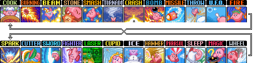
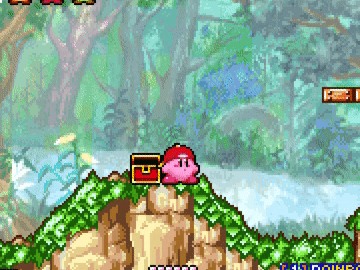
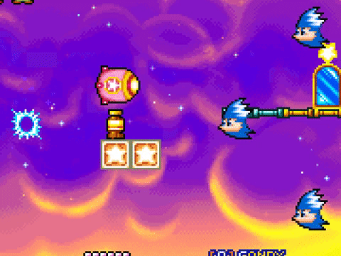

Movement
Powerless Movement
The fastest way to travel while powerless is to bunny hop. Your dashing speed on ground is 476 while in air whether you are dashing or not is 504.
Sliding off edges
When you begin a slide, your speed is faster and gradually slows down. It is overall slower to slide this game. The sliding state however is canceled if you fall off an edge meaning using the speedboost from slides at edges will save you a few frames each time. Sliding is also canceled immediatly if you slide into a wall which can be useful in some places.
Mixing
When you inhale 2 enemies with powers, you can begin a mix. This brings up a roulette allowing you to get any ability in the game (with the exception of mini or master). The mix roulette is always in the same order, the starting location depends on which enemy you inhale first.
Image from swordsmankirby
Wheel
Wheel is the fastest horizontal movement in KatAM and is used for the majority of the any% run. While in wheel you can do a short hop with A. In the case where you wouldn't be able to make a jump because it is too high. You want to do a wheel jump where you cancel wheel and then quickly press A and then B. This is a quick way to do a higher jump with wheel.
Wheel can also be used to fight some bosses, so it is important to note that you are completly invincible in the wheel form unless you are turning. You are vunrable while turning so make sure you space your turns correctly without getting hit.
Hitlag
Each time you hit an enemy with an ability like wheel or burning, the game will pause for 3 frames and most enemies you will hit about 3-4 times before dying. So it is of course faster to try and avoid enemies by jumping over them. It may not seem like a significant timesave however it adds up.
Float Canceling
Pressing A will start a float however pressing b right after will cancel the animation and make Kirby inhale / use his ability. This can be used to gain a little bit more height before using your ability such as wheel
This gap isn't possible to make with a regular wheel jump
Ducking through Shotzo's
The shotzo's hitbox only occupy's the upper half of the sprite, meaning you can slide under it with a well timed duck.

Gif from Mugg1991
Missile
The missile ability allows you to move in any direction depending on where you tap on the dpad. This makes it one of the best movement abilities for vertical movement. Bonking with missile however will leave you super vunrable not being able to do anything except move while falling until touching the ground or waiting a few seconds. When you press B to exit missile. You are sent away from your direction so it is faster to turn around before pressing b so you move towards the direction you want to go in. This property does not exist when underwater.
Example of turning around to blast towards a door